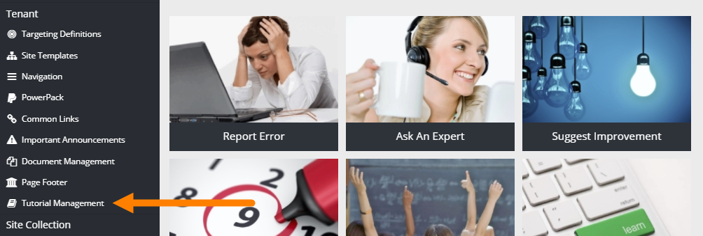
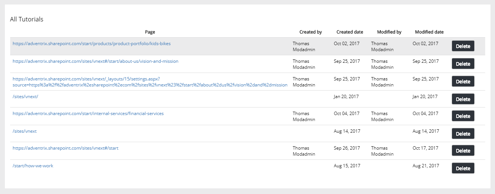
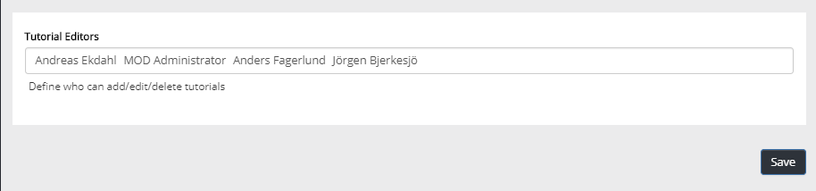

An editor creates an edits tutorials for selected publishing pages. Here an administrator can manage tutorials for the tenant.

All tutorials created in the tenant are displayed in a list, för example:

Page Use the link to the page to there and check out the tutorial.
Created by Name of the editor that has created the tutorial is shown here.
Created date Date for when the tutorial was initially created is shown here.
Modified by Name of the editor that made the latest changes is shown in this column.
Modified date Date for the latest version of the tutorial is shown here.
Delete If the tutorial on this page should now longer be available, you can click this button. A new tutorial can then be created if and when the need arises.
If additional users should be able to manage tutorials, use the "Permissions" option to add or delete users.
